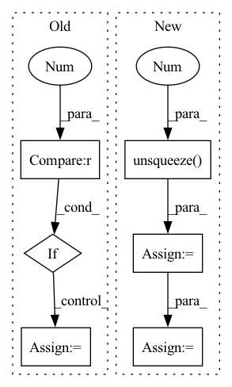

Pattern ID :16055
Before Change
// Remove padded values
// Want e.g. (..., 1000, 768) -> (..., 999, 768)
if pad_length > 0 :
hidden_states = hidden_states[..., 0:(-pad_length), :]
hidden_states = self.layer_norm(hidden_states)
After Change
if attention_mask is not None:
// make sure padded tokens are not attended to
expand_attention_mask = attention_mask.unsqueeze(-1 ) .repeat(1, 1, hidden_states.shape[2])
hidden_states[~expand_attention_mask] = 0
// extend attention_mask
attention_mask = (1.0 - attention_mask[:, None, None, :].to(dtype=hidden_states.dtype)) * -10000.0
attention_mask = attention_mask.expand(
attention_mask.shape[0], 1, attention_mask.shape[-1], attention_mask.shape[-1]
)
position_embeddings = self.pos_conv_embed(hidden_states)
hidden_states = hidden_states + position_embeddings
hidden_states = self.dropout(hidden_states)
for layer in self.layers:
if output_hidden_states:
all_hidden_states = all_hidden_states + (hidden_states,)
layer_outputs = layer(hidden_states, attention_mask=attention_mask, output_attentions=output_attentions)
// add LayerDrop (see https://arxiv.org/abs/1909.11556 for description)
dropout_probability = torch.rand(tuple())
skip_the_layer = torch.tensor(self.training) and (dropout_probability < self.config.layerdrop)
if self.config.layerdrop > 0.0:
hidden_states = torch.where(skip_the_layer, hidden_states, layer_outputs[0])
else:
hidden_states = layer_outputs[0]
if skip_the_layer:
layer_outputs = (None, None)
if output_attentions:
all_self_attentions = all_self_attentions + (layer_outputs[1],)
hidden_states = self.layer_norm(hidden_states)
if output_hidden_states:
all_hidden_states = all_hidden_states + (hidden_states,)
if not return_dict:
return tuple(v for v in [hidden_states, all_hidden_states, all_self_attentions] if v is not None)In pattern: SUPERPATTERN
Frequency: 4
Non-data size: 6
Instances Fragment ID: 53863829
Project Name: huggingface/optimum-graphcore
Commit Name: 075200de7b5b118681fc46af97985bb53ce9c146
Time: 2022-08-03
Author: gejinchen1996@gmail.com
File Name: optimum/graphcore/models/wav2vec2/ipu_layer_drop.py
M Class Name: IPUWav2Vec2EncoderStableLayerNorm
N Class Name: IPUWav2Vec2EncoderStableLayerNorm
M Method Name: forward(6)
N Method Name: forward(6)
M Parent Class: Wav2Vec2EncoderStableLayerNorm
N Parent Class: Wav2Vec2EncoderStableLayerNorm
M File Name: optimum/graphcore/models/wav2vec2/ipu_layer_drop.py
N File Name: optimum/graphcore/models/wav2vec2/ipu_layer_drop.py
M Start Line: 127
M End Line: 193
N Start Line: 101
N End Line: 144
Before Change
def augment(spec, piece_length=30, freq_mask_param=10, time_mask_param=6):
if piece_length == -1 :
num = 1
else:
num = spec.shape[1] // piece_length // less agressive augmentation. performs faster
After Change
return spec
else:
chunks = torch.split(spec, chunk_size, dim=1)
to_be_masked = torch.stack(list(chunks[:-1]), dim=0).unsqueeze(1 )
time_mask(to_be_masked)
freq_mask(to_be_masked)
masked = to_be_masked.squeeze(1).permute(1, 0, 2).reshape((spec.shape[0], -1))
return torch.cat([masked, chunks[-1]], dim=1)
Fragment ID: 53863766
Project Name: ivankunyankin/quartznet-asr
Commit Name: 28f999e7cfbefb66c9545f32e76a7454a7432aac
Time: 2021-07-01
Author: IKunyankin@gmail.com
File Name: utils.py
M Class Name: AnonimousClass
N Class Name: AnonimousClass
M Method Name: augment(4)
N Method Name: augment(4)
M Parent Class:
N Parent Class:
M File Name: utils.py
N File Name: utils.py
M Start Line: 57
M End Line: 82
N Start Line: 57
N End Line: 74
Before Change
// Pad attention mask to more divisible length
remainder = attention_mask.size(-1) % sequence_length_padding_divisor
if remainder != 0 :
pad_length = sequence_length_padding_divisor - remainder
attention_mask = F.pad(
attention_mask,
// Want e.g. (..., 999) -> (..., 1000)
pad=(0, pad_length),After Change
if attention_mask is not None:
// make sure padded tokens output 0
expand_attention_mask = attention_mask.unsqueeze(-1 ) .repeat(1, 1, hidden_states.shape[2])
hidden_states[~expand_attention_mask] = 0
// extend attention_mask
attention_mask = (1.0 - attention_mask[:, None, None, :].to(dtype=hidden_states.dtype)) * -10000.0
attention_mask = attention_mask.expand(
attention_mask.shape[0], 1, attention_mask.shape[-1], attention_mask.shape[-1]
)
position_embeddings = self.pos_conv_embed(hidden_states)
hidden_states = hidden_states + position_embeddings
hidden_states = self.layer_norm(hidden_states)
hidden_states = self.dropout(hidden_states)
for layer in self.layers:
if output_hidden_states:
all_hidden_states = all_hidden_states + (hidden_states,)
layer_outputs = layer(hidden_states, attention_mask=attention_mask, output_attentions=output_attentions)
// add LayerDrop (see https://arxiv.org/abs/1909.11556 for description)
dropout_probability = torch.rand(tuple())
skip_the_layer = torch.tensor(self.training) and (dropout_probability < self.config.layerdrop)
if self.config.layerdrop > 0.0:
hidden_states = torch.where(skip_the_layer, hidden_states, layer_outputs[0])
else:
hidden_states = layer_outputs[0]
if skip_the_layer:
layer_outputs = (None, None)
if output_attentions:
all_self_attentions = all_self_attentions + (layer_outputs[1],)
if output_hidden_states:
all_hidden_states = all_hidden_states + (hidden_states,)
if not return_dict:
return tuple(v for v in [hidden_states, all_hidden_states, all_self_attentions] if v is not None) Fragment ID: 53863827
Project Name: huggingface/optimum-graphcore
Commit Name: 075200de7b5b118681fc46af97985bb53ce9c146
Time: 2022-08-03
Author: gejinchen1996@gmail.com
File Name: optimum/graphcore/models/wav2vec2/ipu_layer_drop.py
M Class Name: IPUWav2Vec2Encoder
N Class Name: IPUWav2Vec2Encoder
M Method Name: forward(6)
N Method Name: forward(6)
M Parent Class: Wav2Vec2Encoder
N Parent Class: Wav2Vec2Encoder
M File Name: optimum/graphcore/models/wav2vec2/ipu_layer_drop.py
N File Name: optimum/graphcore/models/wav2vec2/ipu_layer_drop.py
M Start Line: 41
M End Line: 108
N Start Line: 41
N End Line: 83
Before Change
mask = length_to_mask(
length * targets.shape[1], max_len=targets.shape[1],
)
if len(targets.shape) == 3 :
mask = mask.unsqueeze(2).repeat(1, 1, targets.shape[2])
// Compute, then reduce loss
loss = loss_fn(predictions, targets) * maskAfter Change
// Handle any dimensionality of input
while len(length_mask.shape) < len(mask.shape):
length_mask = length_mask.unsqueeze(-1 )
length_mask = length_mask.type(mask.dtype)
mask *= length_mask
// Compute, then reduce loss Fragment ID: 53863807
Project Name: speechbrain/speechbrain
Commit Name: f9198e1170fc6123693643401693dc6da9308f3f
Time: 2020-11-30
Author: plantinga.peter@protonmail.com
File Name: speechbrain/nnet/losses.py
M Class Name: AnonimousClass
N Class Name: AnonimousClass
M Method Name: compute_masked_loss(6)
N Method Name: compute_masked_loss(6)
M Parent Class:
N Parent Class:
M File Name: speechbrain/nnet/losses.py
N File Name: speechbrain/nnet/losses.py
M Start Line: 621
M End Line: 628
N Start Line: 619
N End Line: 629